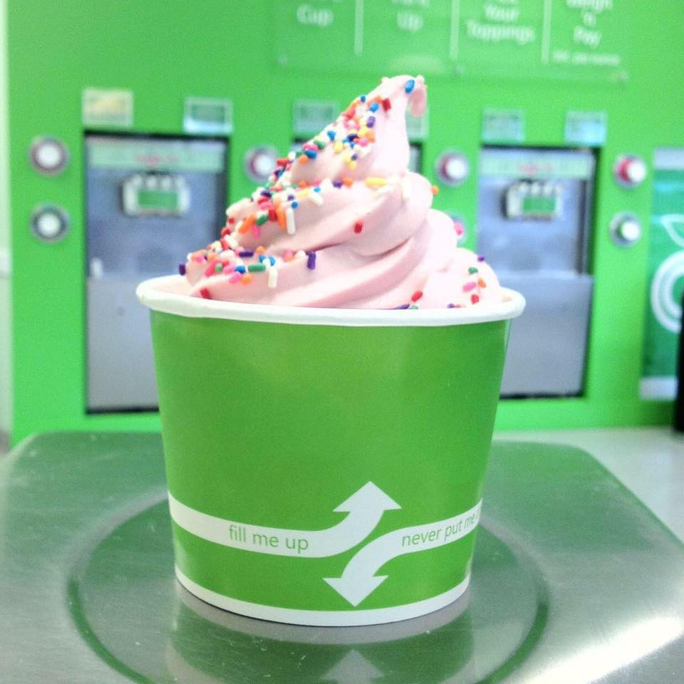

Flavors

Current Flavors
- French Vanilla
- Classic Chocolate
- No Sugar Added Strawberry Banana
- Very Berry Sorbet
- White Chocolate Mousse
- Cake Batter
Yogurt Flavors
- Alpine Vanilla (NF)
- Angel Food Cake (NF)
- Apple Pie (NF)
- Blueberry Burst (NF)
- Bubble Gum (NF)
- Cable Car Chocolate (NF)
- Cappuccino (NF)
- Cake Batter (LF)
- Chocolate (NSA)
- Chocolate Classic (NF)
- Cookies & Cream (NF)
- Country Vanilla (NF)
- Creamy Mint Cookies (NF)
- Dulce De Leche (Caramel) (LF)
- Eggnog (NF)
- French Toast (NF)
- French Vanilla (LF)
- Fruit Punch Sorbet (ND)
- Georgia Peach (NF)
- Huckleberry (NF)
- Hershey’s Heath Toffee (LF)
- Irish Mint (NF)
- Island Banana (NF)
- Kiwi Strawberry Sorbet (ND)
- Luscious Lemon (NF)
- Mango Tango Sorbet (ND)
- Maple Bacon Doughnut (NF)
- Mountain Blackberry (NF)
- New York Cheesecake (NF)
- Original Tart (NF)
- Outrageous Orange (N)
- Peach Mango Tart (NF)
- Peanut Butter (LF)
- Pecan Praline (NF)
- Peppermint Stick (NF)
- Pistachio (NF)
- Pomegranate Raspberry Tart (NF)
- Pumpkin (NF)
- Red Velvet Cake (LF)
- Rootbeer Float (N)
- Snickerdoodle (NF)
- Strawberry Lemonade Sorbet (ND)
- Strawberry Banana (NSA)
- Strawberry Shortcake (LF)
- Sweet Coconut (LF)
- Very Berry Sorbet (ND)
- Very Raspberry (NF)
- Very Strawberry (NF)
- Watermelon Sorbet (ND)
- White Chocolate Macadamia (NF)
- Wild Berry Tart (NF)
AND MORE!
Toppings
Candy & Cookie
- Brownie Bites
- Butterfinger Pieces
- Candy Corn
- Chocolate Chips
- Cookie Dough
- Animal Cookies
- Graham Cracker Crumble
- Gummie Bears
- Gummie Worms
- Heath Bar Chunks
- Marshmallows
- Peanut M&M’S
- Mike & Ikes
- Mini M&M’s
- Oreo
- Peanut Butter Cups
- Reese’s Pieces
- Sprinkles (Rainbow and Chocolate)
- Waffle Cone Pieces
Fruit & Nuts
- Blackberries
- Blueberries
- Cashews
- Cherries
- Chocolate Covered Peanuts
- Chopped Peanuts
- Chopped Walnuts
- Cinnamon Granola
- Coconut
- Peaches
- Pineapple
- Raspberries
- Sliced Almonds
- Strawberries
Syrups
- Hot Fudge
- Carmel
- Chocolate
- Marshmallow Cream
nutrition
- Contains live and active cultures
- All Nonfat and No Sugar Added flavors are low in sodium and cholesterol
- Original Tart™ and EuroTart™ flavors are made with all natural flavors and no artificial colors
YoCream Non-Dairy Sorbet
- Made with all natural flavors and no artificial colors
- No fat, sodium, or cholesterol
- Contains real fruit juice
- Non-dairy
- All YoCream frozen yogurts are compliant with the National Yogurt Association Live and Active Culture program and proudly display the LAC Seal
- All YoCream products are OU-D Kosher Certified and many flavors are gluten free